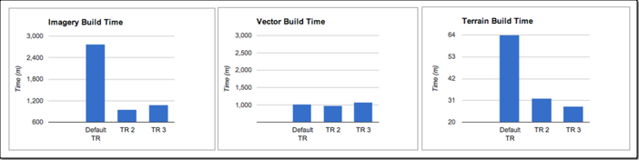

Benchmarking outcomes for applying task rules¶
This article describes the benchmarking of outcomes for applying various task rules to a test set of data in a similar environment. The results are useful in providing guidance in how task rules can improve GEE performance of loading assets and build times.
Tip
This set of tests was designed to help assess how GEE performs in a specific environment. Although certain conclusions can be drawn from the test results, your results may differ. The figures presented here can be used as a reference for the GEE performance only. This testing was conducted with GEE 4.4 using publicly available geospatial data to build a 3D database.
GEE System Specifications
The following table lists the software and hardware specifications that were used for testing.
| OS | Ubuntu 12.04.1 LTS |
| Processor | 8x Intel(R) Xeon ® CPU @2.60GHz |
| CPU | 2599.998 MHz |
| Cache size | 20488 KB |
| Memory | 30 GB |
This set of tests used raster data, terrain data, and vector data that are freely available online. Some of them provide global coverage and others provide local high resolution coverage.
Fusion Server Configurations - Task Rules
A number of task rules can be configured to increase processing speed. You configure task rule settings to assign a number of CPUs to processes that can be run concurrently.
Fusion Server has the following two binaries which are multithreaded to increase processing speed when building a 3D database:
gepackgengecombineterrain
You can identify the activity of these binaries during the processing of your databases by checking the log files listed in the Version Properties dialog. (Right-click an asset in the Asset Manager dialog.)
gepackgen generates imagery or terrain project packets.
Multiple gepackgen processes can run concurrently to speed up
the building of the imagery projects. gecombineterrain
processes 3D databases and merges terrain packets from the
specified indices.
Task rules can be configured based on the number of concurrent
processes required to be run on the Fusion server. Since
gecombineterrain is a serial process and must be completed
before the other database-level building activities can start, the
CombinedTerrain task rule is used to put all available
CPUs/cores onto the build, assuming that one core is reserved for
the system.
The ImageryPacketLevel and TerrainPacketLevel task rules
configure gepackgen for concurrent processing. Both assign
more or fewer CPUs to the pack files that are created during
project builds.
The task rules apply to all subsequent tasks that the Fusion server performs, and cannot be applied to individual assets or projects.
To compare the effect of different task rule settings on the performance of the Fusion server when loading assets and building resources, projects, and databases, three different task rule configurations were used: default taskrule, taskrule 2 and taskrule 3. Default task rule is the GEE default setting after installation.
Detailed settings are in the following table.
| Default taskrule | Default taskrule | Taskrule 2 | Taskrule 2 | Taskrule 3 | Taskrule 3 | |
|---|---|---|---|---|---|---|
| Min CPU | Max CPU | Min CPU | Max CPU | Min CPU | Max CPU | |
| CombinedTerrain | 1 | 1 | 7 | 7 | 7 | 7 |
| ImageryPacketLevel | 1 | 1 | 3 | 3 | 2 | 2 |
| TerrainPacketLevel | 1 | 1 | 3 | 4 | 3 | 4 |
In this set of tests, the server was permitted to use 7 CPU cores for Fusion processing. In Taskrule 2, for example, there can be up to 2 gepackgen tasks running concurrently with three CPUs assigned for each task.
Project build time under different taskrules
Total raster, terrain, and vector project build times are
illustrated in the following charts. The vector project build time
does not change much at all because the task rule settings have no
impact on the gevectorfuse command. For the imagery project,
taskrule 2 provides the best build performance. For the terrain
project, taskrule 3 provides the best build performance.

Total database build time
The database build time with task rule 3 was the fastest - reducing the time to 25.31 hours. Under the default task rule setting, the total database build time took the longest time to finish, 33.52 hours.
Recommendations
Always set the task rule other than default to have better image
project build performance.
With this test dataset, task rule 3 provides the shortest total
database building time on this server - with two imagery
gepackgen tasks running concurrently with two CPUs assigned for
each task; with all available CPU assigned to CombinedTerrain
and two terrain gepackgen tasks running concurrently with three or four
CPUs assigned for each task.
Set CombinedTerrain to put all available CPUs/cores onto the
build.
Select a machine with more memory if processing vector data as
fusing vector data (gevectorfuse) can consume a lot of memory.
.. rubric:: Learn more
:name: learn-more